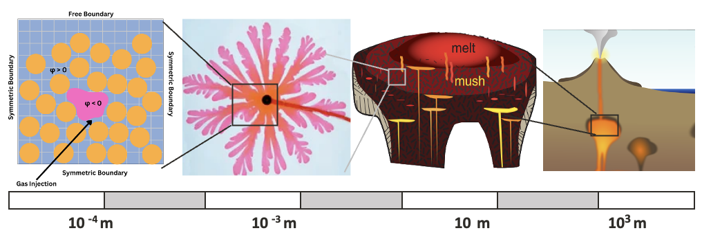
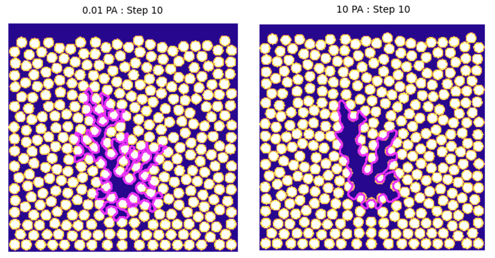
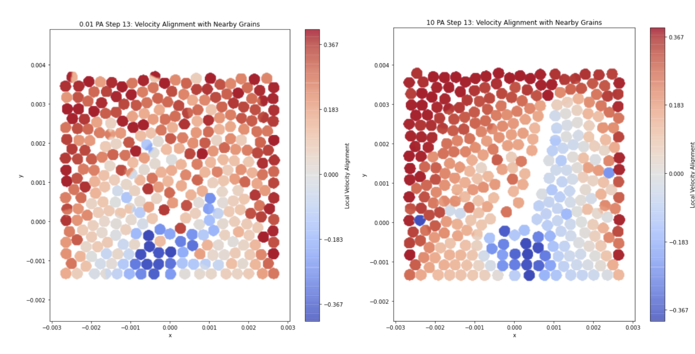

Modeling the Fracture-Flow Transition in Multiphase Granular Mixtures
In this project, I use direct numerical simulations to explore how micro-scale interactions between gases, fluids, and solids in earth systems can give rise to abrupt shifts in bulk system behavior.This page highlights specifically the post-processing methodology in Python, and does not include material on all work in this project.
OVERVIEW & MOTIVATION
As gas works its way through mixtures of solids and fluids, whether in a degassing volcano or melting permafrost, the path it takes is not always predictable. Sometimes the invading gas spreads smoothly through the gaps between the solids, other times it localizes into dominant channels, pushing the rest of the material aside. What makes this transition striking is not just the visual shift in flow pattern, sometimes referred to as the flow-fracture transition, but what it reveals about scale. The behavior of individual grains can cascade upward and reshape the dynamics of an entire system. In Earth sciences, these micro-scale processes are typically captured through bulk material properties — effective viscosity, permeability, rheology — rather than resolved at the grain scale.

In this work, we explicitly captured these dynamics by simulating gas injection into a saturated granular medium at the grain scale, fully resolving the two-way coupling between grains, host fluid, and gas. The setup mimics a Hele-Shaw cell, a standard laboratory design for studying multiphase flow, but in a computational environment where I can control individual variables, and thus scale these experiments to larger viscosity contrasts that are more realistic for what we might see in Earth systems. I ran simulations at two host fluid viscosities (0.01 and 10 Pa·s) with both fixed and mobile grains, keeping the injected gas viscosity constant at 1.78 × 10⁻⁵ Pa·s.
POST-PROCESSING PIPELINE
The simulations were run using a multiphase direct numerical model (Qin & Suckale, 2017) that fully resolves the interactions between injected gas, host fluid, and solid grains. At each computational time step, the model outputs the position, pressure, velocity, and phase identity of every point on the grid. After executing runs on HPC systems with batch scripting, visualizing the grain-level kinematics requires a Python pipeline, where the challenge is that the raw data doesn’t distinguish individual grains.
Toggle to read the details of the post-processing pipeline.
Phase Classification:
The first step is to convert the continuous level-set and solid-indicator fields into binary masks. Grid cells are classified as solid (φsolid < 0), gas (φ < 0), or host fluid (everything else).
Grain identification with KMeans clustering:
Since the simulation resolves phase boundaries on a grid, rather than tracking grains as discrete objects, I use KMeans clustering to identify which grid cells belong to which grain based on their spatial coordinates. The number of clusters is set to match the known grain count in the domain. Each cluster corresponds to one physical grain, and all grid cells within a cluster inherit that grain's identity.
Grain-averaged velocity:
Then for each identified grain cluster, the velocity components (u, v) of all constituent grid cells are averaged to produce a single representative velocity vector per grain. This collapses the sub-grain velocity field into a per-grain kinematic quantity that can be compared across the domain.
Velocity alignment metric:
To quantify collective motion, I compute a normalized dot product between each grain's velocity vector and those of its neighbors. A value of +1 indicates perfectly aligned motion (grains moving together), −1 indicates perfectly opposed motion, and 0 indicates uncorrelated movement. The initial pass computes alignment against all other grains in the domain to establish a baseline.
Collective alignment with nearest-neighbors:
The alignment metric above compares each grain against the full domain, but the more meaningful question is whether grains are moving collectively with their neighbors. Using a k-nearest-neighbors model, I identify each grain's five closest neighbors and average their existing alignment values, producing a local alignment field for each grain. This is what reveals the spatial structure – coherent blocks of grains moving together versus disordered regions where neighbors move independently. The trends shown in the results, with a more apparent structure for higher host fluid velocity, did not change with different values of k.
RESULTS
In Fig. B, we can see the clear difference in flow dynamics at two separate host fluid viscosities. At low viscosity, gas mostly displaces the host fluid without disturbing the grains. The flow fans out in multiple branches from the injection point. At high viscosity, gas localizes into two or three dominant channels that push grains aside and build a compaction front that propagates through the system.

The alignment metric makes this contrast quantitative in Fig. C. At low viscosity, alignment is scattered – small clusters of grains happen to move together, but there's no clear spatial coherence. At high viscosity, the field organizes into large regions of collectively aligned and anti-aligned motion flanking the channels. The grain-scale dynamics have produced deformation across the entire domain.

The key result is that including small grain-scale dynamics changes the entire system. The flow-fracture transition doesn't happen without two-way coupling (verified in work not shown here), it's not a property of the fluid viscosity change alone rather it's an emergent consequence of grains responding to the fluid and the fluid responding back. For volcanic systems, this suggests that the viscosity gradients within a crystalline mush could generate fundamentally different degassing pathways, and that the onset of gas segregation and mush reactivation may be driven by these micro-scale mechanisms.